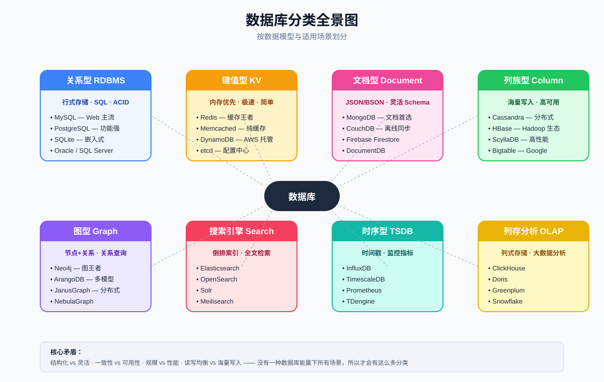
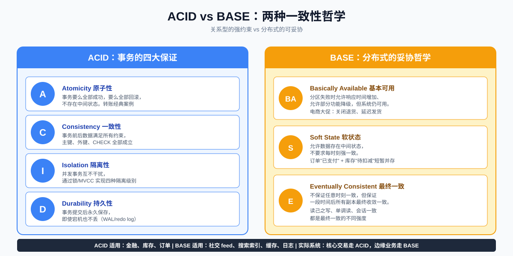
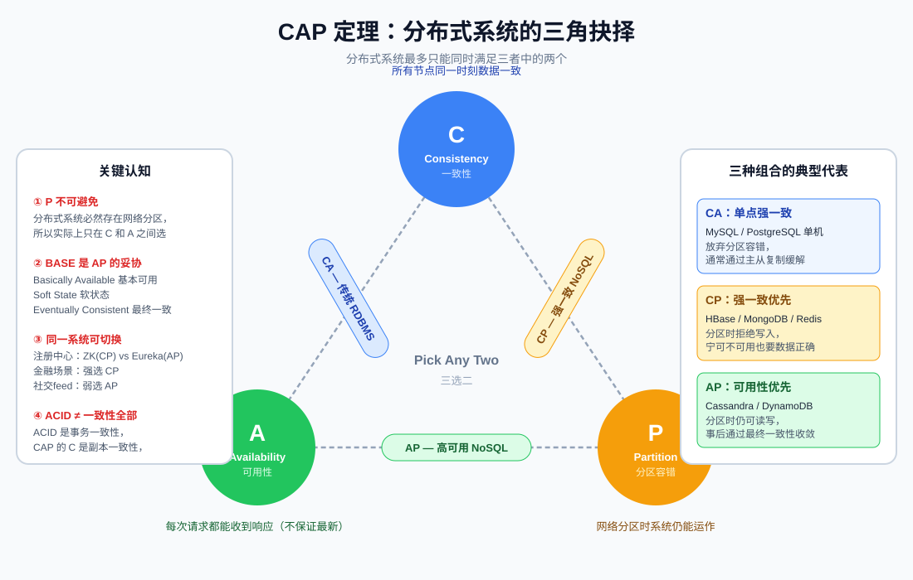
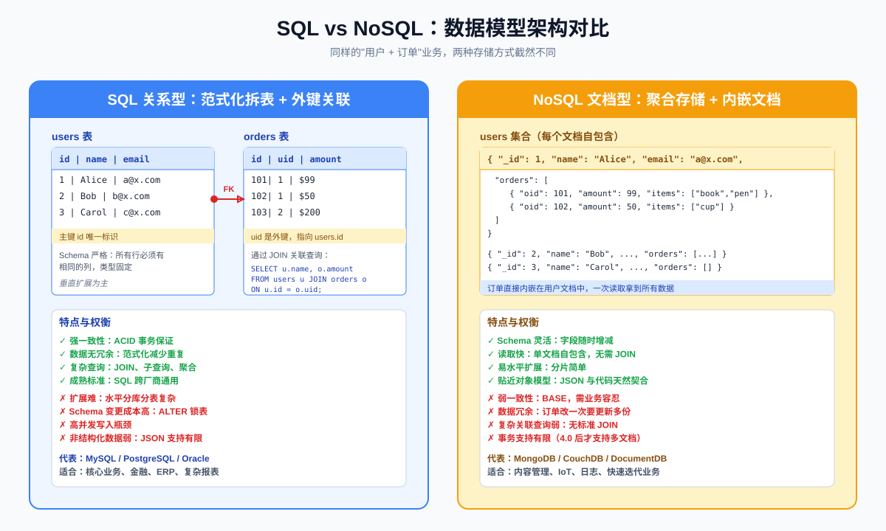
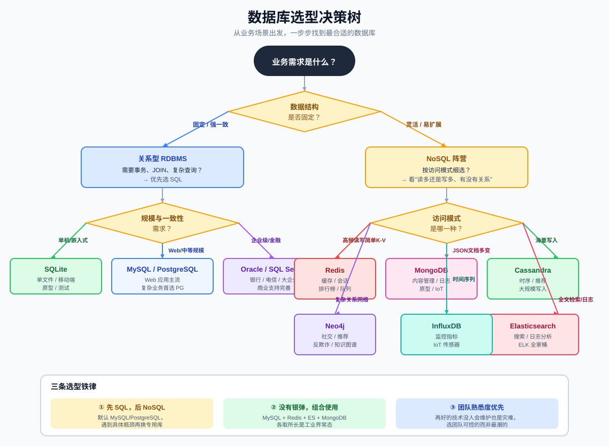
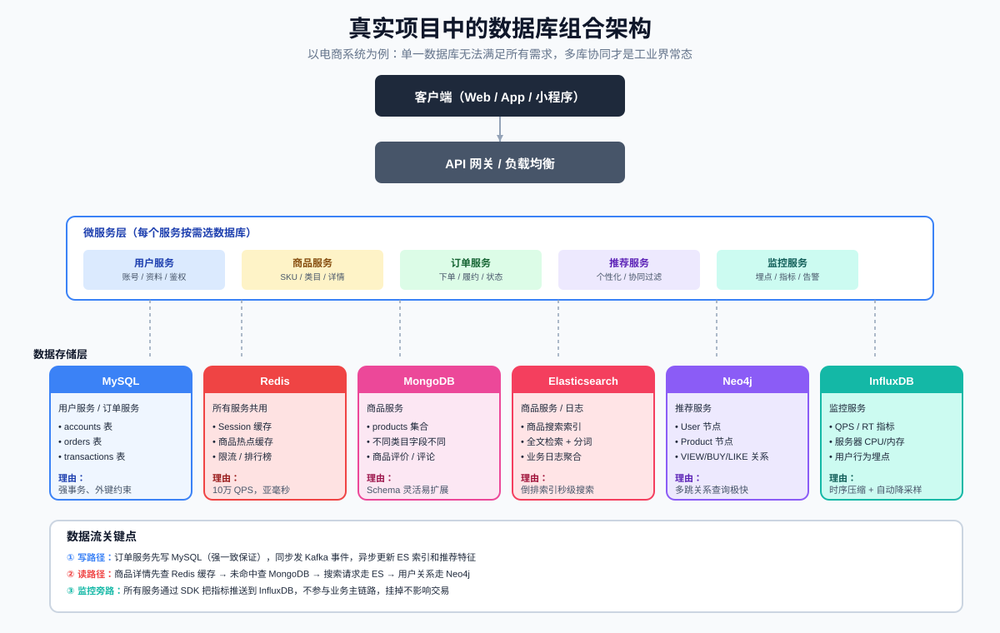

数据库全景指南：从 SQLite 到 MongoDB，一文搞懂选型与差异
MySQL、PostgreSQL、MongoDB、Redis、Cassandra、Neo4j、Elasticsearch…… 数据库多到让人眼花。本文从分类、原理、模型、选型、组合五个维度，带你看清它们各自的边界与适用场景。
一、为什么会有这么多数据库？
先抛一个真实的尴尬场景：
新人入职第一天，被安排设计一个博客系统。他下意识打开 Navicat，建了一张 articles 表，写到第三天发现：文章正文要存富文本，字数可能上万；评论数据要嵌套在文章里；标签数量不固定；还要做全文搜索。继续用 MySQL 越写越别扭，最后只能上 ES 做搜索、MongoDB 存正文、MySQL 存元数据。
这不是个例。没有一种数据库能赢下所有场景，根本原因是存储需求里同时存在四组矛盾：
- 结构化 vs 灵活：业务模型固定还是多变
- 一致性 vs 可用性：要数据绝对正确，还是允许短暂数据不一致换可用性
- 规模 vs 性能：单机极致性能还是分布式海量吞吐
- 读写均衡 vs 海量写入：典型 Web 应用还是 IoT 流式写入
围绕这些矛盾，业界演化出了关系型、键值、文档、列族、图、搜索、时序、列存分析等 八大分支。每解决一组矛盾，就诞生一类新数据库。
二、数据库分类全景图

数据库分类全景图上图把主流数据库按"数据模型 + 适用场景"分成了 8 类。下面我们逐类展开，但在分类之前，必须先理解三个底层概念：ACID、CAP、BASE。它们决定了数据库的"性格"。
三、ACID vs BASE：两种一致性哲学

ACID vs BASE：两种一致性哲学ACID：关系型数据库的承诺
ACID 是事务的四大保证，是关系型数据库压箱底的能力：
| 字母 | 含义 | 通俗解释 |
|---|---|---|
| A Atomicity 原子性 | 事务要么全成功，要么全回滚 | 转账扣款和加款必须同时发生 |
| C Consistency 一致性 | 事务前后满足所有约束 | 主键、外键、CHECK 不能被破坏 |
| I Isolation 隔离性 | 并发事务互不干扰 | MVCC + 锁机制保证 |
| D Durability 持久性 | 提交后即使宕机也不丢 | 通过 WAL / redo log 实现 |
为 ACID 付出的代价：锁竞争、跨节点协调延迟、水平扩展难。这也是为什么单机 MySQL 通常撑到几千 QPS 就开始考虑读写分离。
BASE：分布式系统的妥协
当系统走向分布式，强一致性的代价过高，业界提出 BASE 作为 AP 系统的设计哲学：
- BA Basically Available 基本可用：允许响应变慢、允许功能降级
- S Soft State 软状态：允许存在中间状态
- E Eventually Consistent 最终一致：不保证任意时刻一致，但保证最终收敛
关键认知：ACID 中的 C 是事务一致性（约束不被破坏），CAP 中的 C 是副本一致性（多节点数据相同），两者不是一回事。
四、CAP 定理：分布式系统的三角抉择

CAP 定理：分布式系统的三角抉择CAP 定理由 Eric Brewer 在 2000 年提出，断言：一个分布式系统最多只能同时满足 Consistency（一致性）、Availability（可用性）、Partition tolerance（分区容错）三者中的两个。
三个关键认知
① P 不可避免
真实分布式系统必然存在网络分区（交换机抖动、机房断连、节点宕机）。所以工程师实际上只能在 C 和 A 之间做选择：
- 分区时拒绝写入 → CP，保证数据正确，但牺牲可用性
- 分区时仍可读写 → AP，保证可用性，但允许数据短暂不一致
② 三种组合的典型代表
| 组合 | 牺牲项 | 典型数据库 | 典型场景 |
|---|---|---|---|
| CA | 分区容错 | MySQL 单机、PostgreSQL 单机 | 传统单机业务 |
| CP | 可用性 | HBase、MongoDB、Redis 集群 | 强一致优先的金融、配置 |
| AP | 一致性 | Cassandra、DynamoDB、Eureka | 高可用的社交、推荐 |
③ 同一业务可灵活切换
注册中心是个经典例子：ZooKeeper 是 CP，选举期间不可用；Eureka 是 AP，节点之间不强制同步。Netflix 选 Eureka，因为它能容忍注册信息短暂不一致，但不能容忍服务发现挂掉。
五、关系型数据库：稳如泰山的基石
关系型数据库以 二维表 + SQL + ACID 事务 为核心，是 90% 业务系统的默认选择。
5.1 五大主流 RDBMS 对比
| 数据库 | 厂商 / 协议 | 强项 | 适用场景 |
|---|---|---|---|
| MySQL | 开源（GPL/商业双协议） | 生态成熟、运维资料最多 | Web 应用、电商、CMS |
| PostgreSQL | 开源（BSD） | 复杂查询、JSON、PostGIS、扩展性强 | 复杂业务、地理数据、数据分析 |
| SQLite | 开源（公有领域） | 嵌入式、零配置、单文件 | 移动端、嵌入式、原型、测试 |
| Oracle | 商业 | 企业级功能、稳定性、技术支持 | 银行、电信、政府核心系统 |
| SQL Server | 商业（微软） | 与 .NET 生态深度集成 | 企业内部系统、Windows 环境 |
5.2 选型经验
- 个人项目 / 小工具：SQLite，单文件零配置
- Web 应用首选：MySQL（运维生态好）或 PostgreSQL（功能强、复杂查询爽）
- 企业核心系统有预算：Oracle 或 SQL Server，看团队技术栈
- 要不要选 PostgreSQL 而不是 MySQL？ 如果业务里有复杂分析、地理数据、强约束、JSON 字段，PG 更合适；如果只是 CRUD + 简单关联，MySQL 更省心
5.3 关系型的硬伤
- 水平扩展难：分库分表后跨库 JOIN、事务都成噩梦，需要引入 ShardingSphere、Vitess 之类的中间件
- Schema 变更贵：上亿行表加索引可能锁表几小时
- 高并发写入瓶颈：单机通常几千 QPS，靠缓存兜底
六、NoSQL 的崛起：四大家族
NoSQL（Not Only SQL）的核心动机：通过放松某个约束（一致性 / Schema / 关系），换取扩展性、性能或灵活性。
6.1 SQL vs NoSQL 数据模型对比

SQL vs NoSQL：数据模型架构对比左图是关系型的方式：范式化拆表 + 外键关联，查 Alice 的订单要 JOIN 两张表。 右图是文档型的方式：聚合存储 + 内嵌文档，Alice 的订单直接嵌在她的文档里，一次读取拿全。
两种模型各有利弊：
| 维度 | 关系型（SQL） | 文档型（NoSQL） |
|---|---|---|
| Schema | 严格固定 | 灵活可变 |
| 关联查询 | JOIN 强 | 弱（要靠应用层） |
| 数据冗余 | 低（范式化） | 高（反范式） |
| 事务 | 强 ACID | 弱（多文档 4.0+ 才支持） |
| 扩展性 | 垂直为主 | 易水平分片 |
| 适合 | 关系复杂、强一致 | 模型多变、读多写少 |
6.2 键值型：Redis
Redis 是最被低估的"瑞士军刀"。它表面上是个缓存，实际上能做：
- 缓存：最常见，热点数据加速
- 会话存储：分布式 Session
- 排行榜：ZSet 天生支持
- 消息队列：List / Stream
- 限流器：INCR + EXPIRE
- 分布式锁：SETNX / Redlock
选型提醒：Redis 是 CP 系统（集群模式下）—— 主节点挂掉会触发故障转移，期间集群不可用。不是所有 Redis 都"高可用"。
6.3 文档型：MongoDB
MongoDB 用 BSON（二进制 JSON）存储，每个文档自包含。它的甜点场景：
- 内容管理：文章、评论、附件，结构天然嵌套
- IoT 设备元数据：不同设备字段不同，灵活 Schema 太香
- 快速迭代业务：需求变就加字段，不用 ALTER TABLE
- 日志聚合：MongoDB 的聚合管道 + 副本集很合用
坑点：MongoDB 4.0 才支持多文档事务，复杂事务场景慎用。索引设计不当会让查询慢到怀疑人生。
6.4 列族型：Cassandra / HBase
列族型数据库把"行"打散成"列族"，同一列的数据连续存储，对"按列聚合 + 海量写入"特别友好。
- Cassandra：AWS Dynamo 论文的开源实现，无主架构，写入性能极强。Netflix、Instagram、Apple 都在用
- HBase：基于 HDFS，强一致，适合离线大数据
- ScyllaDB：用 C++ 重写的 Cassandra，性能高一个数量级
典型场景：时序数据、推荐特征存储、消息历史归档。Cassandra 在写入 QPS 上能轻松甩开 MySQL 一个数量级。
6.5 图型：Neo4j
如果业务核心是 关系（不是表关联，而是多跳关系遍历），用图数据库比 SQL 递归查询快几个数量级。
|
|
典型场景：社交网络（好友推荐）、反欺诈（团伙识别）、知识图谱、IT 资产拓扑。
用 MySQL 写"找三度人脉"要用 4 层自连接，性能爆炸；Neo4j 用邻接表存储，时间复杂度近似 O(1)。
七、专用场景数据库：搜索 / 时序 / 列存
通用数据库做不到极致，专用数据库在特定领域把性能压榨到极限。
7.1 搜索引擎：Elasticsearch
ES 用 倒排索引 实现秒级全文检索，是 ELK（Elasticsearch + Logstash + Kibana）的核心。
- 商品搜索：分词、同义词、纠错、相关性排序
- 日志分析：海量日志聚合，按时间维度切片
- 可观测性：APM、链路追踪数据存储
重要认知：ES 不是数据库替代品。它写入延迟较高（近实时，1 秒刷新），不适合做强一致主存储。通常 MySQL 是真相源，ES 是搜索副本，通过 Canal/Debezium 同步。
7.2 时序数据库：InfluxDB / TimescaleDB
时序数据有显著特征：写多读少、按时间顺序、自动降采样、旧数据可丢弃。专用 TSDB 的写入性能比 MySQL 高 1-2 个数量级。
- InfluxDB：Go 写的，单机性能强，TSM 存储引擎
- TimescaleDB：PostgreSQL 扩展，能用 SQL，事务保证更好
- Prometheus：监控专用，pull 模型
- TDengine：国产，物联网场景优化
典型场景：服务器监控、IoT 传感器、金融行情、用户行为埋点。
7.3 列存分析：ClickHouse
OLAP 场景的核心诉求：扫描 TB 级数据，做 GROUP BY 聚合，秒级返回。行存数据库（MySQL）做这种扫描会读大量无关列，列存数据库只读需要的列，性能差几十倍。
|
|
对比：同样的查询，MySQL 要几十分钟，ClickHouse 通常 1 秒内。
八、数据库选型决策树
讲了这么多，实战怎么选？下图给出一份决策路径：

数据库选型决策树三条选型铁律
① 先 SQL，后 NoSQL
绝大多数项目从 MySQL / PostgreSQL 起步就够了。遇到具体瓶颈（缓存、搜索、海量写入、复杂关系）再引入对应专用数据库。一开始就上"全家桶"是过度设计。
② 没有银弹，组合使用
工业界真实系统几乎都是多库组合：核心业务用 MySQL/PG，缓存用 Redis，搜索用 ES，日志用 MongoDB/ES，监控用 InfluxDB，分析用 ClickHouse。让每个数据库只做它最擅长的事。
③ 团队熟悉度优先
再先进的数据库，没人会运维也是灾难。Cassandra 写入性能强，但运维门槛极高，国内很多团队踩坑后还是换回了 MySQL 分库分表。选团队能掌控的，而不是最潮的。
九、真实项目中的数据库组合架构
光说不练假把式。下图是一个典型电商系统的多库协同架构：

真实项目中的数据库组合架构数据流拆解
① 写路径：订单服务先写 MySQL（强一致保证），同时发 Kafka 事件，下游消费者异步更新 ES 搜索索引和推荐系统特征库。这是经典的 “先写主库，再异步同步” 模式。
② 读路径：
| 请求类型 | 走的数据库 | 理由 |
|---|---|---|
| 商品详情 | Redis 缓存 → MongoDB | 缓存挡 95% 流量，回源用文档库装多变 SKU |
| 商品搜索 | Elasticsearch | 倒排索引秒级响应 |
| 好友推荐 | Neo4j | 多跳关系遍历 |
| 个人订单 | MySQL | 强一致，按用户分库 |
| 监控大盘 | InfluxDB | 时序聚合，秒级出图 |
③ 监控旁路：所有服务通过 SDK 把指标推送到 InfluxDB，不参与业务主链路，监控挂掉不影响交易。这是旁路系统的设计铁律。
为什么要拆？
如果不拆，全塞进 MySQL 会发生什么？
- 商品搜索做 LIKE ‘%关键词%’ → 全表扫描，慢到超时
- 监控指标每秒几十万条写入 → MySQL 单机扛不住
- 好友推荐用 4 层自连接 → 几秒出不来结果
- 商品 SKU 字段每类目都不同 → ALTER TABLE 改到吐血
每个专用数据库的存在，都是为了 解决某一类 MySQL 不擅长的问题。
十、核心差异对照表
最后用一张表把主流数据库的关键指标摊开对比：
| 数据库 | 类型 | 一致性 | Schema | 事务 | 水平扩展 | 典型 QPS | 适合场景 |
|---|---|---|---|---|---|---|---|
| MySQL | 关系 | ACID | 严格 | 强 | 难（需中间件） | 几千 | Web 主流 |
| PostgreSQL | 关系 | ACID | 严格 | 强 | 难 | 几千 | 复杂业务 |
| SQLite | 关系 | ACID | 严格 | 强 | 不可 | 单线程 | 嵌入式 |
| Redis | KV | CP | 无 | 弱 | 集群分片 | 10万+ | 缓存 |
| MongoDB | 文档 | CP（可调） | 灵活 | 4.0+ 多文档 | 易分片 | 几万 | 内容管理 |
| Cassandra | 列族 | AP（可调） | 灵活 | 弱 | 极易 | 10万+ 写入 | 海量写入 |
| Neo4j | 图 | ACID | 半结构 | 强 | 难 | 几千 | 关系网络 |
| Elasticsearch | 搜索 | 近实时 | 动态映射 | 弱 | 易分片 | 几万 | 全文搜索 |
| InfluxDB | 时序 | CP | 标签+字段 | 弱 | 集群版收费 | 10万+ 写入 | 监控指标 |
| ClickHouse | 列存 | CP | 严格 | 弱 | 易分片 | 100万+ 写入 | 大数据分析 |
总结
回到最初的问题：SQLite、MySQL、MongoDB 有什么区别？ 它们不是"谁更好"的关系，而是"为不同问题而生"的不同工具。
回顾本文核心要点：
- 没有银弹：每种数据库都是某组矛盾的产物，关系型解决一致性、NoSQL 解决扩展性、专用库解决极端场景
- 理论先行：理解 ACID / BASE / CAP，是看懂所有数据库设计意图的钥匙
- SQL 不死：关系型依然是 90% 业务系统的默认选择，NoSQL 是补充而非替代
- 组合才是常态：工业界真实系统几乎都是多库协同，让每个数据库只做它最擅长的事
- 选型三铁律：先 SQL 后 NoSQL、没有银弹要组合、团队熟悉度优先
下一步行动建议：
- 审视你当前的项目：是不是把所有数据都塞在 MySQL 里了？哪些场景其实更适合专用数据库？
- 挑一个不熟的数据库试一试：Redis / MongoDB / ES 任选一个，跑一遍官方 Quick Start
- 关注 NewSQL：TiDB、CockroachDB、YugabyteDB 这些"既有 ACID 又能水平扩展"的下一代数据库正在崛起
记住：好的架构师不在于会多少种数据库，而在于知道每种数据库的边界在哪。
本文涉及的所有数据库选型都基于公开文档与工程实践，具体落地还需结合团队技术栈、运维能力、预算综合判断。